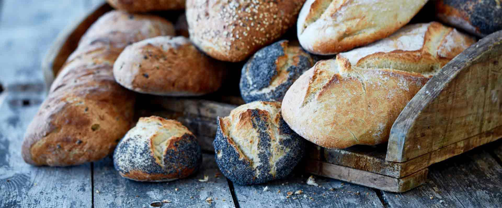

 Hvad er
Hvad er
Nummer 24?
I Latinerkvarteret finder du den hyggelig lille gade, Graven, hvor vi, Christian og Karen, har slået os ned på nummer 24 og startet et lille travlt, men varmt familiedrevet bageri.
Her bruger vi den største del af vores tid bag disken, hvor vi bager fra mandag til lørdag, søndag holder vi lukket - der “puster vi ud”.
Vores udvalg gælder alt lige fra rustikke brød til kanelsnegle og små kager.